Iris Dataset¶
from IPython.display import Image
Image(url='https://frenzy86.s3.eu-west-2.amazonaws.com/fav/iris.png',width=900,height=300)

# import libraries
import pandas as pd
import matplotlib.pyplot as plt
%matplotlib inline
path = 'https://frenzy86.s3.eu-west-2.amazonaws.com/fav/iris.data'
df = pd.read_csv(path,header=None)
df
| 0 | 1 | 2 | 3 | 4 | |
|---|---|---|---|---|---|
| 0 | 5.1 | 3.5 | 1.4 | 0.2 | Iris-setosa |
| 1 | 4.9 | 3.0 | 1.4 | 0.2 | Iris-setosa |
| 2 | 4.7 | 3.2 | 1.3 | 0.2 | Iris-setosa |
| 3 | 4.6 | 3.1 | 1.5 | 0.2 | Iris-setosa |
| 4 | 5.0 | 3.6 | 1.4 | 0.2 | Iris-setosa |
| ... | ... | ... | ... | ... | ... |
| 145 | 6.7 | 3.0 | 5.2 | 2.3 | Iris-virginica |
| 146 | 6.3 | 2.5 | 5.0 | 1.9 | Iris-virginica |
| 147 | 6.5 | 3.0 | 5.2 | 2.0 | Iris-virginica |
| 148 | 6.2 | 3.4 | 5.4 | 2.3 | Iris-virginica |
| 149 | 5.9 | 3.0 | 5.1 | 1.8 | Iris-virginica |
150 rows × 5 columns
df.shape
(150, 5)
df.columns = ['sepal length', 'sepal width', 'petal length', 'petal width', 'class']
df
| sepal length | sepal width | petal length | petal width | class | |
|---|---|---|---|---|---|
| 0 | 5.1 | 3.5 | 1.4 | 0.2 | Iris-setosa |
| 1 | 4.9 | 3.0 | 1.4 | 0.2 | Iris-setosa |
| 2 | 4.7 | 3.2 | 1.3 | 0.2 | Iris-setosa |
| 3 | 4.6 | 3.1 | 1.5 | 0.2 | Iris-setosa |
| 4 | 5.0 | 3.6 | 1.4 | 0.2 | Iris-setosa |
| ... | ... | ... | ... | ... | ... |
| 145 | 6.7 | 3.0 | 5.2 | 2.3 | Iris-virginica |
| 146 | 6.3 | 2.5 | 5.0 | 1.9 | Iris-virginica |
| 147 | 6.5 | 3.0 | 5.2 | 2.0 | Iris-virginica |
| 148 | 6.2 | 3.4 | 5.4 | 2.3 | Iris-virginica |
| 149 | 5.9 | 3.0 | 5.1 | 1.8 | Iris-virginica |
150 rows × 5 columns
df.info()
<class 'pandas.core.frame.DataFrame'>
RangeIndex: 150 entries, 0 to 149
Data columns (total 5 columns):
# Column Non-Null Count Dtype
--- ------ -------------- -----
0 sepal length 150 non-null float64
1 sepal width 150 non-null float64
2 petal length 150 non-null float64
3 petal width 150 non-null float64
4 class 150 non-null object
dtypes: float64(4), object(1)
memory usage: 6.0+ KB
df.describe()
| sepal length | sepal width | petal length | petal width | |
|---|---|---|---|---|
| count | 150.000000 | 150.000000 | 150.000000 | 150.000000 |
| mean | 5.843333 | 3.054000 | 3.758667 | 1.198667 |
| std | 0.828066 | 0.433594 | 1.764420 | 0.763161 |
| min | 4.300000 | 2.000000 | 1.000000 | 0.100000 |
| 25% | 5.100000 | 2.800000 | 1.600000 | 0.300000 |
| 50% | 5.800000 | 3.000000 | 4.350000 | 1.300000 |
| 75% | 6.400000 | 3.300000 | 5.100000 | 1.800000 |
| max | 7.900000 | 4.400000 | 6.900000 | 2.500000 |
df.groupby('class').count()
| sepal length | sepal width | petal length | petal width | |
|---|---|---|---|---|
| class | ||||
| Iris-setosa | 50 | 50 | 50 | 50 |
| Iris-versicolor | 50 | 50 | 50 | 50 |
| Iris-virginica | 50 | 50 | 50 | 50 |
import seaborn as sns
sns.set(color_codes=True)
/usr/local/lib/python3.6/dist-packages/statsmodels/tools/_testing.py:19: FutureWarning: pandas.util.testing is deprecated. Use the functions in the public API at pandas.testing instead. import pandas.util.testing as tm
sns.pairplot(df,hue='class',aspect=1,height=2)
<seaborn.axisgrid.PairGrid at 0x7fc54b9cdf28>
df.hist(figsize=(10,10));
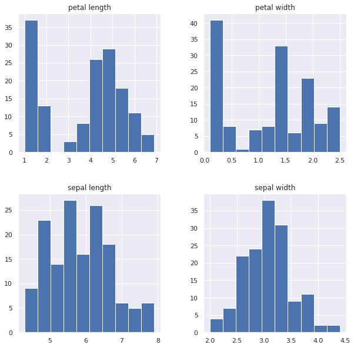
pd.plotting.scatter_matrix(df,figsize=(10,8))
array([[<matplotlib.axes._subplots.AxesSubplot object at 0x7fc54685ab00>,
<matplotlib.axes._subplots.AxesSubplot object at 0x7fc5467f9550>,
<matplotlib.axes._subplots.AxesSubplot object at 0x7fc5467a3b70>,
<matplotlib.axes._subplots.AxesSubplot object at 0x7fc546760208>],
[<matplotlib.axes._subplots.AxesSubplot object at 0x7fc54678f860>,
<matplotlib.axes._subplots.AxesSubplot object at 0x7fc546741eb8>,
<matplotlib.axes._subplots.AxesSubplot object at 0x7fc5466fe550>,
<matplotlib.axes._subplots.AxesSubplot object at 0x7fc5466adb70>],
[<matplotlib.axes._subplots.AxesSubplot object at 0x7fc5466adbe0>,
<matplotlib.axes._subplots.AxesSubplot object at 0x7fc54661d898>,
<matplotlib.axes._subplots.AxesSubplot object at 0x7fc54664def0>,
<matplotlib.axes._subplots.AxesSubplot object at 0x7fc54660a588>],
[<matplotlib.axes._subplots.AxesSubplot object at 0x7fc5465c1320>,
<matplotlib.axes._subplots.AxesSubplot object at 0x7fc54656da90>,
<matplotlib.axes._subplots.AxesSubplot object at 0x7fc54652b240>,
<matplotlib.axes._subplots.AxesSubplot object at 0x7fc5464d99b0>]],
dtype=object)
df.boxplot()
<matplotlib.axes._subplots.AxesSubplot at 0x7fc5463bbe80>
df.boxplot(by='class',figsize=(10,8));
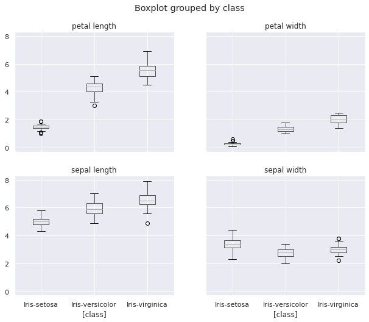
plt.figure(figsize=(16,10))
# subplot 2x2
plt.subplot(2,2,1)
sns.violinplot(x='class',y='sepal length',data=df)
plt.subplot(2,2,2)
sns.violinplot(x='class',y='sepal width',data=df)
plt.subplot(2,2,3)
sns.violinplot(x='class',y='petal length',data=df)
plt.subplot(2,2,4)
sns.violinplot(x='class',y='petal width',data=df);
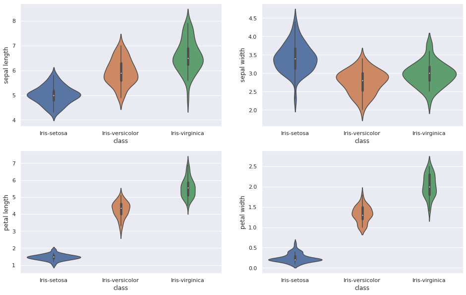
df.columns
Index(['sepal length', 'sepal width', 'petal length', 'petal width', 'class'], dtype='object')
plt.figure(figsize=(10,4))
plt.title('iris sepal length distribution x class')
plt.legend('class')
sns.countplot(x='sepal length',data=df,hue='class');
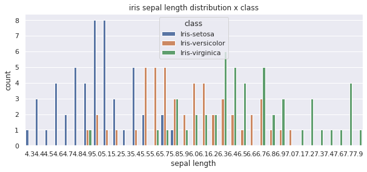
sns.countplot(x='class',data=df,hue='class');
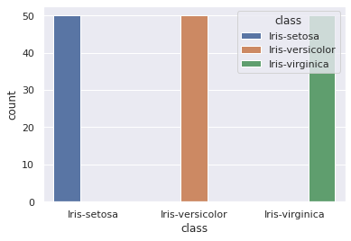
sns.jointplot(x='sepal length',y='sepal width',data=df, size=8,color='red')
/usr/local/lib/python3.6/dist-packages/seaborn/axisgrid.py:2264: UserWarning: The `size` parameter has been renamed to `height`; please update your code. warnings.warn(msg, UserWarning)
<seaborn.axisgrid.JointGrid at 0x7fc546085ba8>
sns.lmplot(x='sepal length',y='petal width',hue='class',data=df,fit_reg=True);
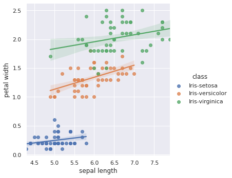
plt.figure(figsize=(12,8))
sns.boxplot(x='class',y='petal width',data=df)
<matplotlib.axes._subplots.AxesSubplot at 0x7fc545e1b898>
plt.figure(figsize=(10,8))
sns.boxplot(x='class',y='petal width',data=df)
sns.stripplot(x='class',y='petal width',data=df)
<matplotlib.axes._subplots.AxesSubplot at 0x7fc5468415c0>
plt.figure(figsize=(10,8))
sns.violinplot(x='class',y='petal width',data=df,palette={'blue','yellow','red'});
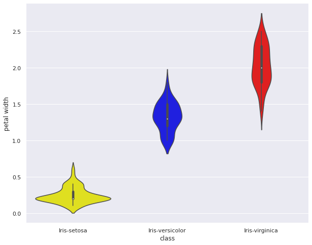
sns.jointplot(x='sepal length',y='petal width',ratio=10,data=df,kind='hex',color='green');
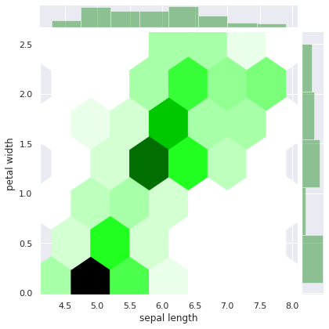
from pandas.plotting import andrews_curves
plt.figure(figsize=(10,8))
andrews_curves(df,'class',colormap='rainbow');
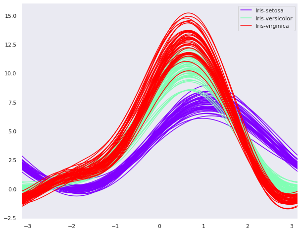
from pandas.plotting import parallel_coordinates
plt.figure(figsize=(10,8))
parallel_coordinates(df,'class',colormap='cool') #colormap='cool'
<matplotlib.axes._subplots.AxesSubplot at 0x7fc5461b06a0>
from IPython.display import Image
Image(url='https://frenzy86.s3.eu-west-2.amazonaws.com/fav/lin_reg.png',width=640,height=480)

y = b0+b1*x+e
import numpy as np
random_s = np.random.RandomState(667)
x = 10*random_s.rand(100)
y = 3*x + np.random.rand(100)
plt.figure(figsize=(18,12))
plt.scatter(x,y)
<matplotlib.collections.PathCollection at 0x7fc545b5ae48>
from sklearn.linear_model import LinearRegression
model = LinearRegression(fit_intercept=True)
model
LinearRegression(copy_X=True, fit_intercept=True, n_jobs=None, normalize=False)
x
array([4.86610464, 1.97978517, 5.28346419, 3.68695458, 7.82874919,
2.82652529, 3.41804111, 5.20830197, 2.85638889, 7.34064386,
0.90749449, 1.35425909, 8.51678334, 7.12926457, 9.19199065,
7.85519552, 1.688719 , 6.96251446, 8.88945153, 7.0325431 ,
6.37626004, 9.88851343, 6.04915291, 7.46432785, 2.63776906,
5.30708234, 4.52511282, 3.69299098, 9.23120291, 3.92694281,
5.40312056, 8.86214268, 8.24402473, 4.68679329, 5.69681052,
4.69327739, 6.92866021, 4.15811085, 8.6263374 , 2.67642935,
5.28908438, 4.4469427 , 1.05006349, 2.85510142, 6.89105223,
6.99991668, 3.19455673, 5.24127735, 1.3010091 , 7.22745877,
9.71215386, 0.69770086, 4.70108857, 9.21385919, 4.58632714,
0.82403928, 9.5194292 , 6.50257099, 3.48289144, 2.05546581,
3.09421597, 2.58087765, 8.7305923 , 8.00911493, 9.30729007,
1.96431457, 4.98520709, 7.94063825, 3.50268123, 4.93158549,
1.52092549, 0.83939958, 6.07952866, 2.31087085, 8.02916756,
7.3491579 , 3.41236393, 7.41676453, 8.84061257, 7.40420586,
7.71712 , 9.74908628, 2.19502219, 3.76892286, 6.16216779,
5.9741139 , 6.91338929, 8.01379038, 3.97683571, 7.52575632,
8.59896236, 5.91202905, 5.23231218, 4.95419857, 4.77002411,
7.48610742, 9.69206218, 2.50246651, 7.84851457, 6.75470927])
type(x)
numpy.ndarray
x.shape
(100,)
x.ndim
1
X = x.reshape(-1,1)
X
array([[4.86610464],
[1.97978517],
[5.28346419],
[3.68695458],
[7.82874919],
[2.82652529],
[3.41804111],
[5.20830197],
[2.85638889],
[7.34064386],
[0.90749449],
[1.35425909],
[8.51678334],
[7.12926457],
[9.19199065],
[7.85519552],
[1.688719 ],
[6.96251446],
[8.88945153],
[7.0325431 ],
[6.37626004],
[9.88851343],
[6.04915291],
[7.46432785],
[2.63776906],
[5.30708234],
[4.52511282],
[3.69299098],
[9.23120291],
[3.92694281],
[5.40312056],
[8.86214268],
[8.24402473],
[4.68679329],
[5.69681052],
[4.69327739],
[6.92866021],
[4.15811085],
[8.6263374 ],
[2.67642935],
[5.28908438],
[4.4469427 ],
[1.05006349],
[2.85510142],
[6.89105223],
[6.99991668],
[3.19455673],
[5.24127735],
[1.3010091 ],
[7.22745877],
[9.71215386],
[0.69770086],
[4.70108857],
[9.21385919],
[4.58632714],
[0.82403928],
[9.5194292 ],
[6.50257099],
[3.48289144],
[2.05546581],
[3.09421597],
[2.58087765],
[8.7305923 ],
[8.00911493],
[9.30729007],
[1.96431457],
[4.98520709],
[7.94063825],
[3.50268123],
[4.93158549],
[1.52092549],
[0.83939958],
[6.07952866],
[2.31087085],
[8.02916756],
[7.3491579 ],
[3.41236393],
[7.41676453],
[8.84061257],
[7.40420586],
[7.71712 ],
[9.74908628],
[2.19502219],
[3.76892286],
[6.16216779],
[5.9741139 ],
[6.91338929],
[8.01379038],
[3.97683571],
[7.52575632],
[8.59896236],
[5.91202905],
[5.23231218],
[4.95419857],
[4.77002411],
[7.48610742],
[9.69206218],
[2.50246651],
[7.84851457],
[6.75470927]])
X.ndim
2
X.shape
(100, 1)
model.fit(X,y)
LinearRegression(copy_X=True, fit_intercept=True, n_jobs=None, normalize=False)
model.coef_
array([3.03580257])
model.intercept_
0.29120917088533815
# y = 0.51477 + 2.99935*x
X_fit = np.linspace(-1,11)
X_fit = X_fit.reshape(-1,1)
X_fit.ndim
2
X_fit
array([[-1. ],
[-0.75510204],
[-0.51020408],
[-0.26530612],
[-0.02040816],
[ 0.2244898 ],
[ 0.46938776],
[ 0.71428571],
[ 0.95918367],
[ 1.20408163],
[ 1.44897959],
[ 1.69387755],
[ 1.93877551],
[ 2.18367347],
[ 2.42857143],
[ 2.67346939],
[ 2.91836735],
[ 3.16326531],
[ 3.40816327],
[ 3.65306122],
[ 3.89795918],
[ 4.14285714],
[ 4.3877551 ],
[ 4.63265306],
[ 4.87755102],
[ 5.12244898],
[ 5.36734694],
[ 5.6122449 ],
[ 5.85714286],
[ 6.10204082],
[ 6.34693878],
[ 6.59183673],
[ 6.83673469],
[ 7.08163265],
[ 7.32653061],
[ 7.57142857],
[ 7.81632653],
[ 8.06122449],
[ 8.30612245],
[ 8.55102041],
[ 8.79591837],
[ 9.04081633],
[ 9.28571429],
[ 9.53061224],
[ 9.7755102 ],
[10.02040816],
[10.26530612],
[10.51020408],
[10.75510204],
[11. ]])
y_fit = model.predict(X_fit)
y_fit
array([-2.7445934 , -2.00113155, -1.25766969, -0.51420784, 0.22925402,
0.97271587, 1.71617773, 2.45963958, 3.20310144, 3.94656329,
4.69002515, 5.433487 , 6.17694885, 6.92041071, 7.66387256,
8.40733442, 9.15079627, 9.89425813, 10.63771998, 11.38118184,
12.12464369, 12.86810555, 13.6115674 , 14.35502926, 15.09849111,
15.84195297, 16.58541482, 17.32887668, 18.07233853, 18.81580039,
19.55926224, 20.3027241 , 21.04618595, 21.78964781, 22.53310966,
23.27657151, 24.02003337, 24.76349522, 25.50695708, 26.25041893,
26.99388079, 27.73734264, 28.4808045 , 29.22426635, 29.96772821,
30.71119006, 31.45465192, 32.19811377, 32.94157563, 33.68503748])
plt.figure(figsize=(12,8))
plt.plot(X_fit,y_fit)
plt.scatter(x,y);
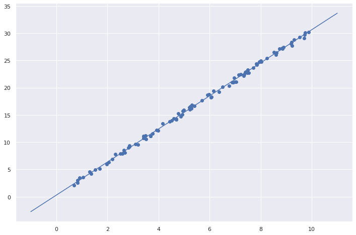
from sklearn.datasets import load_iris
iris = load_iris()
iris.data
array([[5.1, 3.5, 1.4, 0.2],
[4.9, 3. , 1.4, 0.2],
[4.7, 3.2, 1.3, 0.2],
[4.6, 3.1, 1.5, 0.2],
[5. , 3.6, 1.4, 0.2],
[5.4, 3.9, 1.7, 0.4],
[4.6, 3.4, 1.4, 0.3],
[5. , 3.4, 1.5, 0.2],
[4.4, 2.9, 1.4, 0.2],
[4.9, 3.1, 1.5, 0.1],
[5.4, 3.7, 1.5, 0.2],
[4.8, 3.4, 1.6, 0.2],
[4.8, 3. , 1.4, 0.1],
[4.3, 3. , 1.1, 0.1],
[5.8, 4. , 1.2, 0.2],
[5.7, 4.4, 1.5, 0.4],
[5.4, 3.9, 1.3, 0.4],
[5.1, 3.5, 1.4, 0.3],
[5.7, 3.8, 1.7, 0.3],
[5.1, 3.8, 1.5, 0.3],
[5.4, 3.4, 1.7, 0.2],
[5.1, 3.7, 1.5, 0.4],
[4.6, 3.6, 1. , 0.2],
[5.1, 3.3, 1.7, 0.5],
[4.8, 3.4, 1.9, 0.2],
[5. , 3. , 1.6, 0.2],
[5. , 3.4, 1.6, 0.4],
[5.2, 3.5, 1.5, 0.2],
[5.2, 3.4, 1.4, 0.2],
[4.7, 3.2, 1.6, 0.2],
[4.8, 3.1, 1.6, 0.2],
[5.4, 3.4, 1.5, 0.4],
[5.2, 4.1, 1.5, 0.1],
[5.5, 4.2, 1.4, 0.2],
[4.9, 3.1, 1.5, 0.2],
[5. , 3.2, 1.2, 0.2],
[5.5, 3.5, 1.3, 0.2],
[4.9, 3.6, 1.4, 0.1],
[4.4, 3. , 1.3, 0.2],
[5.1, 3.4, 1.5, 0.2],
[5. , 3.5, 1.3, 0.3],
[4.5, 2.3, 1.3, 0.3],
[4.4, 3.2, 1.3, 0.2],
[5. , 3.5, 1.6, 0.6],
[5.1, 3.8, 1.9, 0.4],
[4.8, 3. , 1.4, 0.3],
[5.1, 3.8, 1.6, 0.2],
[4.6, 3.2, 1.4, 0.2],
[5.3, 3.7, 1.5, 0.2],
[5. , 3.3, 1.4, 0.2],
[7. , 3.2, 4.7, 1.4],
[6.4, 3.2, 4.5, 1.5],
[6.9, 3.1, 4.9, 1.5],
[5.5, 2.3, 4. , 1.3],
[6.5, 2.8, 4.6, 1.5],
[5.7, 2.8, 4.5, 1.3],
[6.3, 3.3, 4.7, 1.6],
[4.9, 2.4, 3.3, 1. ],
[6.6, 2.9, 4.6, 1.3],
[5.2, 2.7, 3.9, 1.4],
[5. , 2. , 3.5, 1. ],
[5.9, 3. , 4.2, 1.5],
[6. , 2.2, 4. , 1. ],
[6.1, 2.9, 4.7, 1.4],
[5.6, 2.9, 3.6, 1.3],
[6.7, 3.1, 4.4, 1.4],
[5.6, 3. , 4.5, 1.5],
[5.8, 2.7, 4.1, 1. ],
[6.2, 2.2, 4.5, 1.5],
[5.6, 2.5, 3.9, 1.1],
[5.9, 3.2, 4.8, 1.8],
[6.1, 2.8, 4. , 1.3],
[6.3, 2.5, 4.9, 1.5],
[6.1, 2.8, 4.7, 1.2],
[6.4, 2.9, 4.3, 1.3],
[6.6, 3. , 4.4, 1.4],
[6.8, 2.8, 4.8, 1.4],
[6.7, 3. , 5. , 1.7],
[6. , 2.9, 4.5, 1.5],
[5.7, 2.6, 3.5, 1. ],
[5.5, 2.4, 3.8, 1.1],
[5.5, 2.4, 3.7, 1. ],
[5.8, 2.7, 3.9, 1.2],
[6. , 2.7, 5.1, 1.6],
[5.4, 3. , 4.5, 1.5],
[6. , 3.4, 4.5, 1.6],
[6.7, 3.1, 4.7, 1.5],
[6.3, 2.3, 4.4, 1.3],
[5.6, 3. , 4.1, 1.3],
[5.5, 2.5, 4. , 1.3],
[5.5, 2.6, 4.4, 1.2],
[6.1, 3. , 4.6, 1.4],
[5.8, 2.6, 4. , 1.2],
[5. , 2.3, 3.3, 1. ],
[5.6, 2.7, 4.2, 1.3],
[5.7, 3. , 4.2, 1.2],
[5.7, 2.9, 4.2, 1.3],
[6.2, 2.9, 4.3, 1.3],
[5.1, 2.5, 3. , 1.1],
[5.7, 2.8, 4.1, 1.3],
[6.3, 3.3, 6. , 2.5],
[5.8, 2.7, 5.1, 1.9],
[7.1, 3. , 5.9, 2.1],
[6.3, 2.9, 5.6, 1.8],
[6.5, 3. , 5.8, 2.2],
[7.6, 3. , 6.6, 2.1],
[4.9, 2.5, 4.5, 1.7],
[7.3, 2.9, 6.3, 1.8],
[6.7, 2.5, 5.8, 1.8],
[7.2, 3.6, 6.1, 2.5],
[6.5, 3.2, 5.1, 2. ],
[6.4, 2.7, 5.3, 1.9],
[6.8, 3. , 5.5, 2.1],
[5.7, 2.5, 5. , 2. ],
[5.8, 2.8, 5.1, 2.4],
[6.4, 3.2, 5.3, 2.3],
[6.5, 3. , 5.5, 1.8],
[7.7, 3.8, 6.7, 2.2],
[7.7, 2.6, 6.9, 2.3],
[6. , 2.2, 5. , 1.5],
[6.9, 3.2, 5.7, 2.3],
[5.6, 2.8, 4.9, 2. ],
[7.7, 2.8, 6.7, 2. ],
[6.3, 2.7, 4.9, 1.8],
[6.7, 3.3, 5.7, 2.1],
[7.2, 3.2, 6. , 1.8],
[6.2, 2.8, 4.8, 1.8],
[6.1, 3. , 4.9, 1.8],
[6.4, 2.8, 5.6, 2.1],
[7.2, 3. , 5.8, 1.6],
[7.4, 2.8, 6.1, 1.9],
[7.9, 3.8, 6.4, 2. ],
[6.4, 2.8, 5.6, 2.2],
[6.3, 2.8, 5.1, 1.5],
[6.1, 2.6, 5.6, 1.4],
[7.7, 3. , 6.1, 2.3],
[6.3, 3.4, 5.6, 2.4],
[6.4, 3.1, 5.5, 1.8],
[6. , 3. , 4.8, 1.8],
[6.9, 3.1, 5.4, 2.1],
[6.7, 3.1, 5.6, 2.4],
[6.9, 3.1, 5.1, 2.3],
[5.8, 2.7, 5.1, 1.9],
[6.8, 3.2, 5.9, 2.3],
[6.7, 3.3, 5.7, 2.5],
[6.7, 3. , 5.2, 2.3],
[6.3, 2.5, 5. , 1.9],
[6.5, 3. , 5.2, 2. ],
[6.2, 3.4, 5.4, 2.3],
[5.9, 3. , 5.1, 1.8]])
X = df.drop(['class'],axis=1)
y = df['class']
y
0 Iris-setosa
1 Iris-setosa
2 Iris-setosa
3 Iris-setosa
4 Iris-setosa
...
145 Iris-virginica
146 Iris-virginica
147 Iris-virginica
148 Iris-virginica
149 Iris-virginica
Name: class, Length: 150, dtype: object
X.shape
(150, 4)
y.shape
(150,)
import pandas as pd
import numpy as np
from IPython.display import Image
Image(url='https://frenzy86.s3.eu-west-2.amazonaws.com/fav/iris_8.png',width=900,height=300)

from sklearn.linear_model import LogisticRegression
from sklearn.model_selection import train_test_split
from sklearn.metrics import classification_report,accuracy_score
X_train,X_test,y_train,y_test = train_test_split(X,y, test_size=0.2,random_state=667)
y_test
116 Iris-virginica
15 Iris-setosa
73 Iris-versicolor
80 Iris-versicolor
93 Iris-versicolor
51 Iris-versicolor
129 Iris-virginica
141 Iris-virginica
94 Iris-versicolor
123 Iris-virginica
12 Iris-setosa
106 Iris-virginica
69 Iris-versicolor
24 Iris-setosa
125 Iris-virginica
148 Iris-virginica
6 Iris-setosa
13 Iris-setosa
42 Iris-setosa
132 Iris-virginica
60 Iris-versicolor
68 Iris-versicolor
1 Iris-setosa
7 Iris-setosa
102 Iris-virginica
121 Iris-virginica
38 Iris-setosa
97 Iris-versicolor
98 Iris-versicolor
34 Iris-setosa
Name: class, dtype: object
y_test.size
30
model = LogisticRegression()
model.fit(X_train,y_train)
LogisticRegression(C=1.0, class_weight=None, dual=False, fit_intercept=True,
intercept_scaling=1, l1_ratio=None, max_iter=100,
multi_class='auto', n_jobs=None, penalty='l2',
random_state=None, solver='lbfgs', tol=0.0001, verbose=0,
warm_start=False)
X_test.shape
(30, 4)
model.predict_proba(X_test)
array([[1.13727727e-04, 1.49296611e-01, 8.50589662e-01],
[9.81694440e-01, 1.83055231e-02, 3.67645553e-08],
[4.95262089e-03, 8.55006744e-01, 1.40040635e-01],
[4.78524571e-02, 9.37498071e-01, 1.46494714e-02],
[1.82454238e-01, 8.14447925e-01, 3.09783690e-03],
[8.34362559e-03, 8.53182016e-01, 1.38474358e-01],
[3.08531614e-05, 1.43806020e-01, 8.56163127e-01],
[1.91371821e-04, 1.41965051e-01, 8.57843578e-01],
[2.26891772e-02, 9.15326922e-01, 6.19839003e-02],
[1.11490333e-03, 4.26570980e-01, 5.72314116e-01],
[9.76085568e-01, 2.39143930e-02, 3.89440851e-08],
[1.14010422e-02, 6.14554423e-01, 3.74044535e-01],
[3.87527251e-02, 9.43271957e-01, 1.79753177e-02],
[9.50734667e-01, 4.92649843e-02, 3.48652009e-07],
[9.45630962e-06, 5.84189202e-02, 9.41571624e-01],
[1.03598767e-04, 6.06249631e-02, 9.39271438e-01],
[9.85833283e-01, 1.41666814e-02, 3.59348462e-08],
[9.92027685e-01, 7.97230819e-03, 6.82515785e-09],
[9.88635690e-01, 1.13642906e-02, 1.95217714e-08],
[2.08035988e-05, 3.97677412e-02, 9.60211455e-01],
[9.65450292e-02, 8.96848665e-01, 6.60630589e-03],
[3.57145532e-03, 7.92830157e-01, 2.03598387e-01],
[9.73598809e-01, 2.64011366e-02, 5.41261497e-08],
[9.75310525e-01, 2.46894201e-02, 5.49192317e-08],
[5.60264196e-06, 3.18278232e-02, 9.68166574e-01],
[1.37453787e-03, 2.63294056e-01, 7.35331406e-01],
[9.86282646e-01, 1.37173283e-02, 2.54733333e-08],
[1.30218358e-02, 9.25173682e-01, 6.18044827e-02],
[3.23364201e-01, 6.75313177e-01, 1.32262150e-03],
[9.70459471e-01, 2.95404705e-02, 5.86661560e-08]])
y_predict = model.predict(X_test)
y_predict
array(['Iris-virginica', 'Iris-setosa', 'Iris-versicolor',
'Iris-versicolor', 'Iris-versicolor', 'Iris-versicolor',
'Iris-virginica', 'Iris-virginica', 'Iris-versicolor',
'Iris-virginica', 'Iris-setosa', 'Iris-versicolor',
'Iris-versicolor', 'Iris-setosa', 'Iris-virginica',
'Iris-virginica', 'Iris-setosa', 'Iris-setosa', 'Iris-setosa',
'Iris-virginica', 'Iris-versicolor', 'Iris-versicolor',
'Iris-setosa', 'Iris-setosa', 'Iris-virginica', 'Iris-virginica',
'Iris-setosa', 'Iris-versicolor', 'Iris-versicolor', 'Iris-setosa'],
dtype=object)
confronto = pd.DataFrame(data=[y_predict,y_test])
confronto = confronto.T
confronto.columns = ['predetto','reale']
confronto
| predetto | reale | |
|---|---|---|
| 0 | Iris-virginica | Iris-virginica |
| 1 | Iris-setosa | Iris-setosa |
| 2 | Iris-versicolor | Iris-versicolor |
| 3 | Iris-versicolor | Iris-versicolor |
| 4 | Iris-versicolor | Iris-versicolor |
| 5 | Iris-versicolor | Iris-versicolor |
| 6 | Iris-virginica | Iris-virginica |
| 7 | Iris-virginica | Iris-virginica |
| 8 | Iris-versicolor | Iris-versicolor |
| 9 | Iris-virginica | Iris-virginica |
| 10 | Iris-setosa | Iris-setosa |
| 11 | Iris-versicolor | Iris-virginica |
| 12 | Iris-versicolor | Iris-versicolor |
| 13 | Iris-setosa | Iris-setosa |
| 14 | Iris-virginica | Iris-virginica |
| 15 | Iris-virginica | Iris-virginica |
| 16 | Iris-setosa | Iris-setosa |
| 17 | Iris-setosa | Iris-setosa |
| 18 | Iris-setosa | Iris-setosa |
| 19 | Iris-virginica | Iris-virginica |
| 20 | Iris-versicolor | Iris-versicolor |
| 21 | Iris-versicolor | Iris-versicolor |
| 22 | Iris-setosa | Iris-setosa |
| 23 | Iris-setosa | Iris-setosa |
| 24 | Iris-virginica | Iris-virginica |
| 25 | Iris-virginica | Iris-virginica |
| 26 | Iris-setosa | Iris-setosa |
| 27 | Iris-versicolor | Iris-versicolor |
| 28 | Iris-versicolor | Iris-versicolor |
| 29 | Iris-setosa | Iris-setosa |
import matplotlib.pyplot as plt
%matplotlib inline
lenght = y_predict.shape[0]
lenght
30
x = np.linspace(0,lenght,lenght)
plt.figure(figsize=(18,10))
plt.plot(x,y_test, label='reali')
plt.plot(x,y_predict, label='predetti')
plt.legend(loc=2);
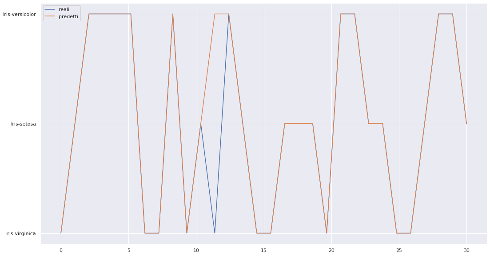
new_input = [[1,0,1,1.0]]
type(new_input)
list
model.predict(new_input)
array(['Iris-setosa'], dtype=object)